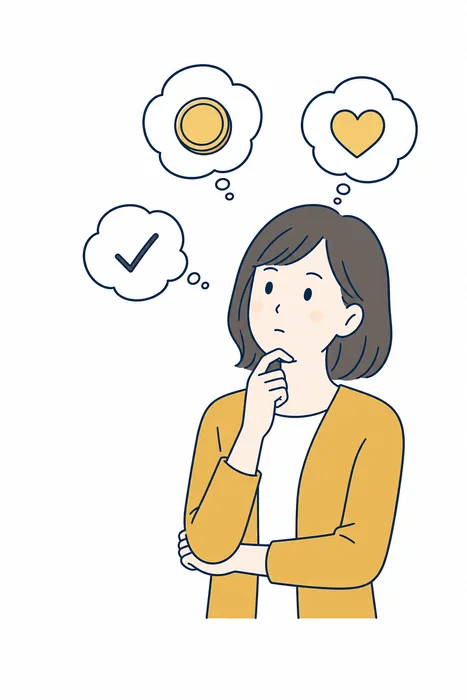
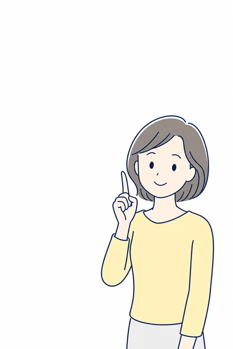

退職予定の方へ
最大365万円
受け取れる制度を
ご存じですか？
24時間受付
伴走サポート
ブロックOK
※ 画面はイメージです。質問の内容や数は人によって変わります。もらえるかどうかは審査で決まります。
無料診断は、LINEで3ステップ
答えるのは、かんたんな質問だけ。ここまでは無料なので、途中でやめても大丈夫です。
-
1
LINEで
友だち追加ボタンを押すとLINEが開きます。登録は無料です。
-
2
質問に
答える年齢や辞める予定、働いていた期間など。選ぶだけでOKです。
-
3
結果が
届くもらえそうかどうかと、だいたいの金額がわかります。
申請の準備まで、
ぜんぶLINEでできます。
退職後に受け取れるお金は、1つじゃない
病気やケガで働くのがつらいとき、失業保険とは別にもらえるお金があります。会社にいるうちから準備できますが、自分で申請しないともらえません。しかも、会社が教えてくれることはほとんどないんです。
傷病手当金を受け取った人の
3人に1人以上は、
心の不調が理由です。
いちばん多いのは心の不調（35.20%）で、がん（13.57%）の約2.6倍。
もらっていた期間は、平均 158日（約5か月）です。
傷病手当金
病気やケガで働けない間の生活を助けてくれるお金。給料の約3分の2を、最長1年6か月もらえます。
失業保険（基本手当）
働けるようになってから、仕事を探しながらもらうお金。休んで治している間はもらえません。
自分から辞めると、失業保険はすぐにはもらえません
手続きをしてから7日間は待つ期間。さらに自分から辞めた場合は、原則1か月もらえない期間があります。辞めてすぐは、お金が入ってこないんです。この時期をどう乗り切るかが、とても大事です。
どうして、知らない人が多いの？
会社は教えてくれない
会社には教える決まりがありません。人事の人が知らないこともよくあります。
役所は聞かれたことにしか答えない
制度の説明はしてくれますが、「あなたはどうしたらいいか」までは教えてくれません。
申請した人だけがもらえる
昔からある、ちゃんとした国の制度です。知っている人だけが使えている、というだけなんです。
ひとりでやる？ 手伝ってもらう？
ひとりでやる
- かかるお金：0円
- 辞める日の決め方：誰も教えてくれない
- もらう順番：自分で調べる
- 書類：書き方から自分で調べる
- 毎月の手続き：体調が悪くても自分で
- 出し忘れ・ミス：取り戻せないことも
- 辞めると伝える：自分で言う
手伝ってもらう
- 有料（診断は無料）
- 決める前に相談できる
- 一緒に考えてくれる
- 書類づくりを手伝ってくれる
- もらっている間も相談できる
- 前もって防げる
- 退職代行・転職の手伝いもあり
申請するのは、どちらの場合も自分です。ちがうのは「何を・いつ・どう出すか」を、ひとりで決めるかどうかだけ。
※ 一般的な比較です。サポート内容・費用は事業者により異なります。支給可否は保険者（ハローワーク・健康保険の保険者）の審査によります。
ひとりでやると、ここでつまずきます
0円でできるのはうれしいですよね。でもひとりだと、この9つを全部自分で決めることになります。
-
1
退職日に半日でも
出社したら対象外 -
2
健康保険が1年ないと
対象外 -
3
医師の証明は
診断書とは別物 -
4
申請書は4枚
1枚欠けても不可 -
5
申請も医師の証明も
毎月必要 -
6
失業保険の延長を
忘れると消える -
7
任意継続か国保か
20日以内に決める -
8
切り替えが早くても
遅くても損 -
9
不支給でも
理由を見て出し直せる
※ ボタンをタップするとYELL!!の公式サイトへ移動します。
あなたは、対象になりそうですか？
- 在職中で、退職を検討している
- ここ2年で、雇用保険に入っていた期間が合計1年以上ある
- 体や心の調子が悪くて、働き続けるのがつらい
- 次の仕事は、まだ決まっていない
- 辞めたあとの生活費に不安がある
- 会社に「辞めたい」と言い出せない

3つ以上当てはまったら、一度チェックしてみる価値ありです。当てはまらないものがあっても、対象外とはかぎりません。決めるのは、ハローワークや健康保険の窓口です。
YELL!!とは？PR
退職給付金の申請を手伝ってくれるサービスです。もらえるかの確認から書類づくり、申請のやり方まで、専門チームがLINEでサポート。自分から辞める場合もOKで、最短1か月でもらい始めることを目指せます。退職代行や転職の相談もまとめてお任せ。診断は無料、LINEは24時間受付です。
※ 運営：合同会社Pay It Forward。受給率100%（2025年5月時点・YELL!!公表）。支給の可否は、ハローワーク・健康保険の保険者の審査によります。
相談の前にチェック！こんな方は対象外です
- 18歳未満、または65歳以上の方
- 法人の代表者・個人事業主の方
- ここ2年で、雇用保険に入っていた期間が合計1年未満の方
- 障害者手帳をお持ちの方
- 公務員の方
同じ方の重複申し込みや、事実とちがう内容での申し込みはお受けできません。
よくある質問
まとめ
もらえるはずのお金も、
申請しないともらえません
今すぐ決めなくても大丈夫です。ただ、辞めた日を過ぎると変えられない条件もあります。自分がもらえそうかどうかだけ、今日チェックしておきませんか？

まずは、対象かどうか確認してみませんか？
LINE LINEで自分が対象か確認するボタンを押すとYELL!!の公式サイトに移動します。診断は無料です。料金やサポートの内容は、申し込む前に必ず確認してくださいね。
- 本ページはプロモーションを含みます
- 本ページは、公開されている情報をもとに編集部が作成した紹介記事です
- 傷病手当金・失業保険は、法令に定める要件を満たした場合に、保険者（健康保険組合・協会けんぽ）またはハローワークの審査を経て支給されるものです。本ページで紹介するサービスは、受給を保証するものではありません
- 給付金の申請は本人が行うものです。本ページで紹介するサービスは、書類の準備や進め方の支援を行うものであり、申請の代行を行うものではありません
- 本ページに記載の金額は、いずれも制度上の計算例です。実際に受け取れる金額・期間は、標準報酬月額・被保険者期間・療養の状況により異なります
- 心身の不調がないにもかかわらず、受給を目的として受診や診断書の取得を行うことは、不正受給にあたるおそれがあります
- 掲載内容は時点の情報です。最新の条件は各公式サイトおよび公的機関でご確認ください